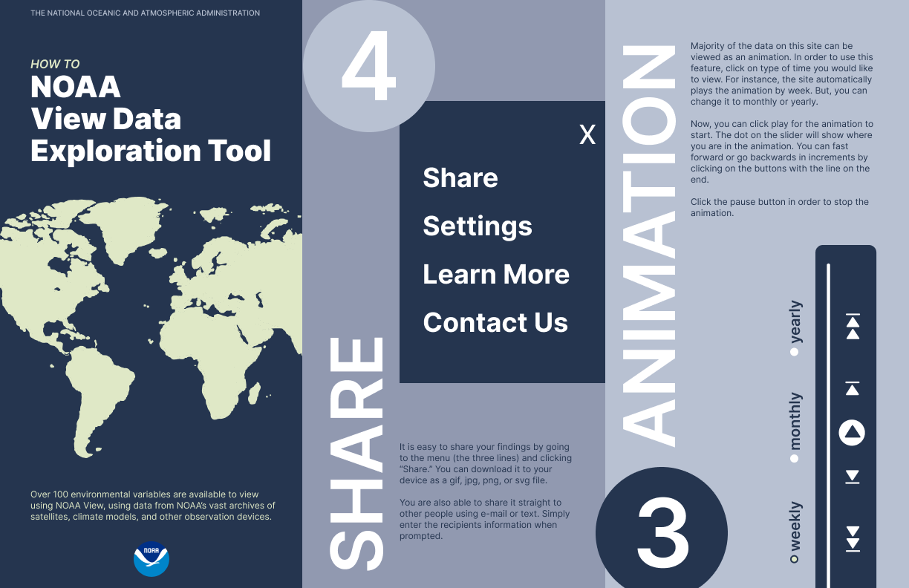
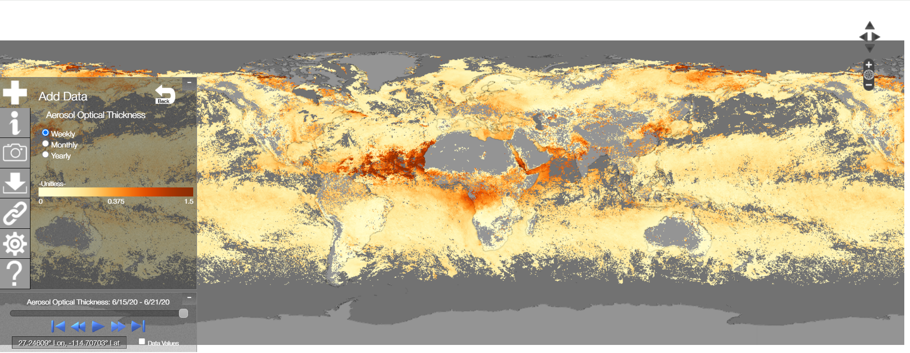
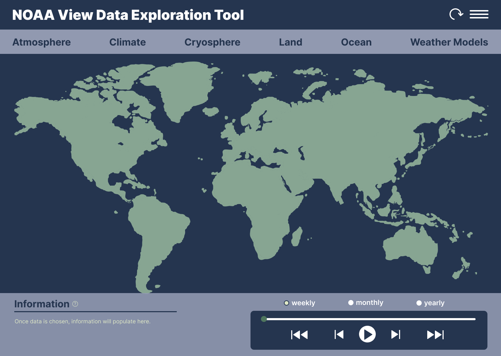
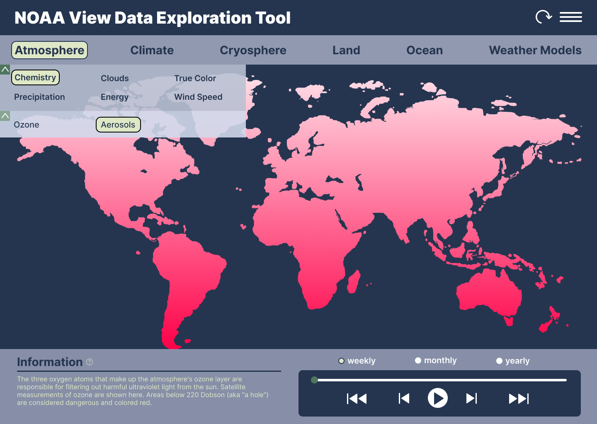
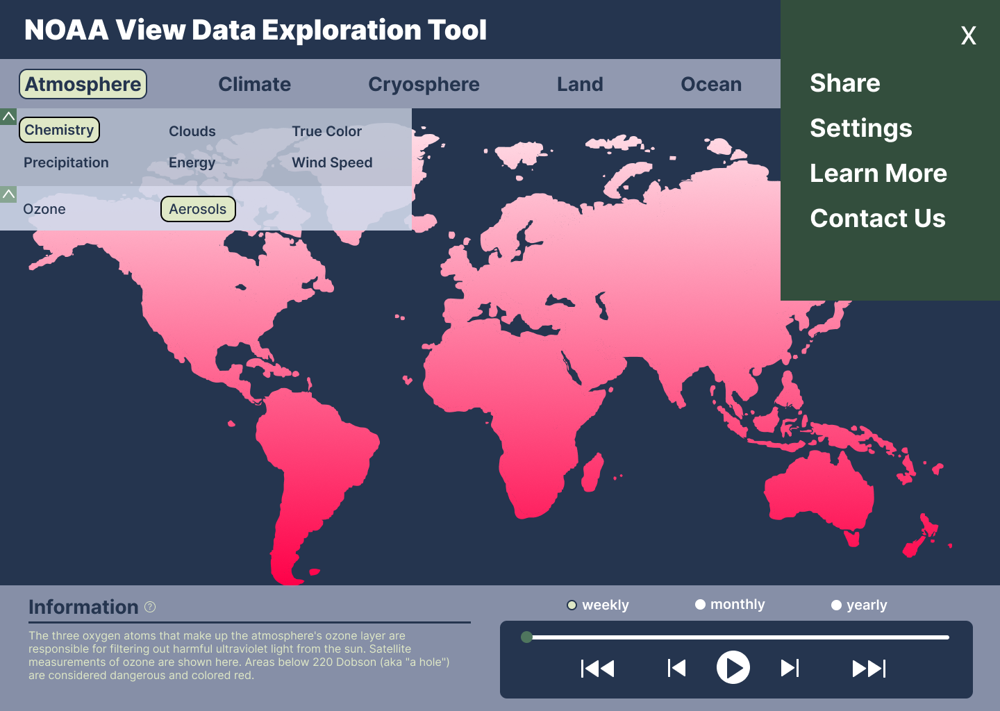
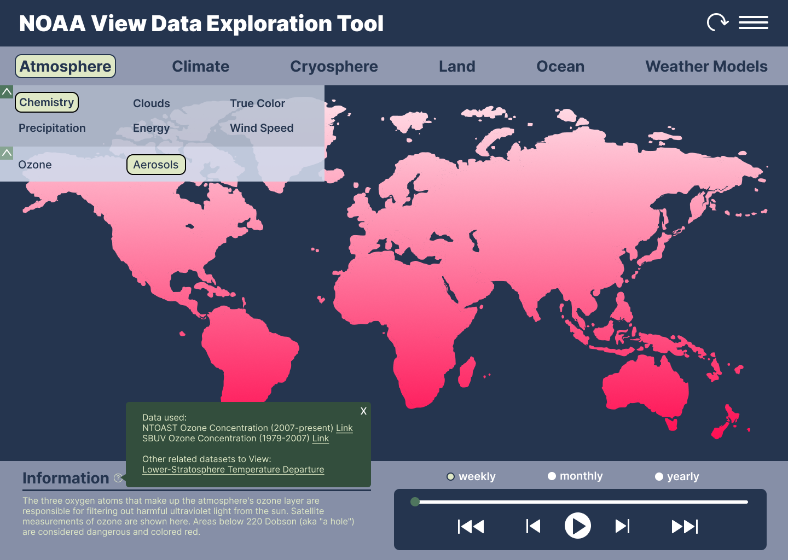
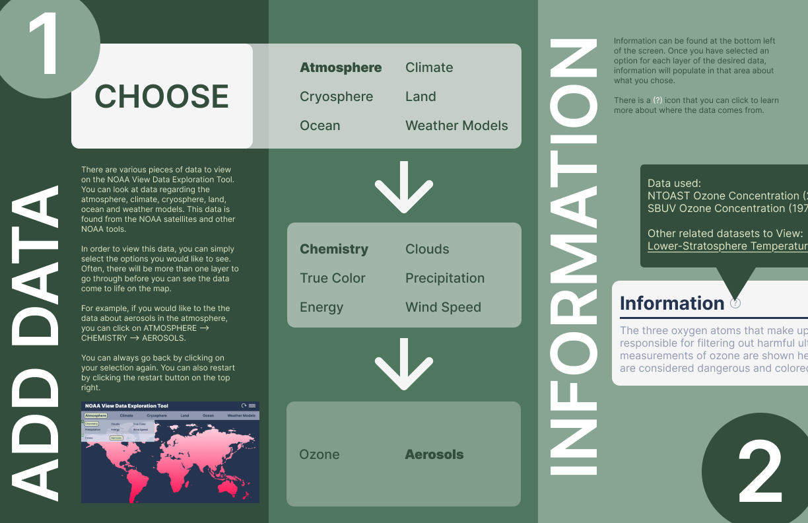

UI Redesign · Print · Touching Grass · 2025
A redesign of NOAA's climate data visualization tool, making 100+ environmental datasets actually navigable, paired with a printed how-to guide.
Role
Solo designer
Type
UI redesign · Print design
Deliverables
Figma prototype · Trifold brochure
Tools
Figma · Adobe InDesign
The project
The NOAA View Data Exploration Tool gives the public access to over 100 environmental datasets, things like aerosols, ocean temperatures, ozone, and wind speed. The data is all there, but the existing interface makes it really hard to find. Navigation is buried in a cluttered floating sidebar and the hierarchy doesn't make much sense.
The goal was to redesign the tool so it's actually easy to use, and then create a printed how-to guide that walks users through it step by step.
Before & after
The original interface stacks everything into a floating sidebar on top of the map, which makes it hard to see the data you're actually trying to look at. I moved the navigation to a persistent top bar with a clear category structure, and brought the information panel to the bottom so it doesn't compete with the map.

Before
AfterRedesigned screens
The nav works in layers: top-level categories sit in a persistent bar, subcategories expand inline, and you can drill down one more level before the data loads. Everything is collapsible so you never lose your place on the map.



Interactive prototype
The Figma prototype walks through the full navigation flow, from selecting a top-level category all the way to loading environmental data on the map.
Print companion
Alongside the digital redesign, I made a trifold brochure that walks users through the tool's five main actions: Choose, Add Data, Information, Share, and Animation. It uses the same navy and sage palette as the redesign so the two feel like they belong together.
